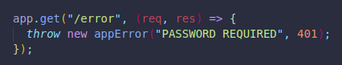
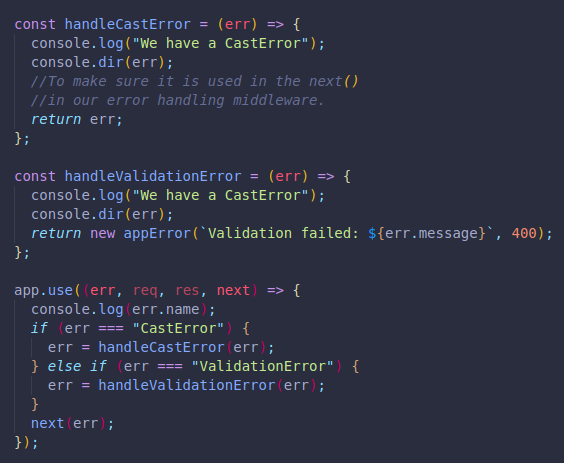

There are many errors we might find, like with our syntax, other services and tools, our databases, API errors, etc.
We must try to anticipate as many of these situations as possible.
Express has a default behavior for error handling, which is a copy of our HTML, with a request code of 500.
We can throw our own errors like this:
We can create our own error handlers too.
In order for this to work, there are four arguments we must pass in our error handling middleware function.
We should position these code blocks after the other app.use() we may have.
We can console log a desired message, the error itself, and even generate a special webpage as a response:
If we include next(err), we will have to remove the res.send(), since the request will continue to the next error handling middleware, which if not specified would be the default handler from Express.
We can create a separate js file with an error which we can call on in our app by saving it to a class.
We can then include it in our paths by throwing it in instead of a regular Error followed by the status code we want to be returned.
Or we can destructure our error object, (the same one we created on a different file), and set its status to another code we want, in case there is no default in that other file:
And we could further destructure our app error object:
If we include more arguments on our error object, we could also use those after destructuring them too.
When we have to wait for an asynchronous function to return a value, or check for an existing piece of data, etc., the way we handle errors is different.
Just like when we pass next(err), we must place our thrown new Error with the status code and message.

We can use return on our next() to make sure the content outside our conditional is never sent. Also an else would work.
When working with a real error, and not one we produced or threw ourselves, we will have to use try{} and catch{}.
We can wrap all of our code in the try{}, and we can use catch(err){} and pass in next(err) inside, remembering to add next as an argument of our async function.
This will catch the error and a default response will be shown to the user. (Which we can customize later.)
We can use the throw new Error/classError to our advantage in a conditional expression. We can intentionally throw an error if a statement is false, with the complete conditional inside our try{}, which would send it to our catch(err){next(err)} which would handle it!
Instead of using try and catch on every single path we use, we can create an async utility function.
This will help us reduce duplicate code.
We are creating a function which accepts another function as a parameter, and inside it we first return the function along with our regular req,res and next.
Then we execute the parameter function with those same arguments and add a catch function, where we take any error and use next along with the error to find an error handling middleware.
We can later move the function to a separate file if needed.
Sometimes we may want custom feedback from a Mongoose error.
Like when we try to access an id which doesn't exist, if it has the same number of characters as our working id's, it will not be catched by express.
We will instead get a Mongoose error on the screen regarding the inexistent object upon looking for it in our database.
We can create a logger to log the error type in our console and use next to pass the error to our error handling middleware.
This will tell us if it was a CastError, ValidationError, etc.
We can then include specific functions that handle each type of error in a different way inside the same error handling middleware.
We can create function for each type of error that we can have our error handling middleware execute on the error itself if the error matches the options we feed it. Or even use our class error function along with an error code we specify.
